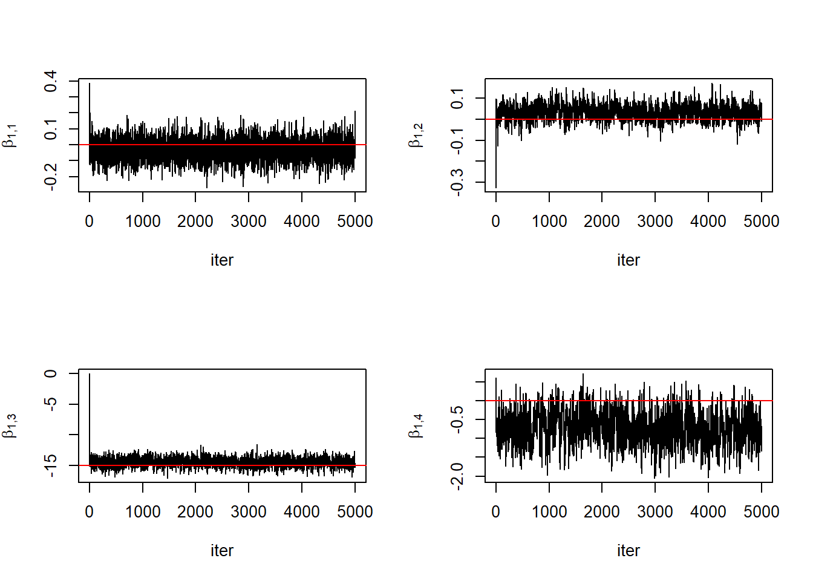
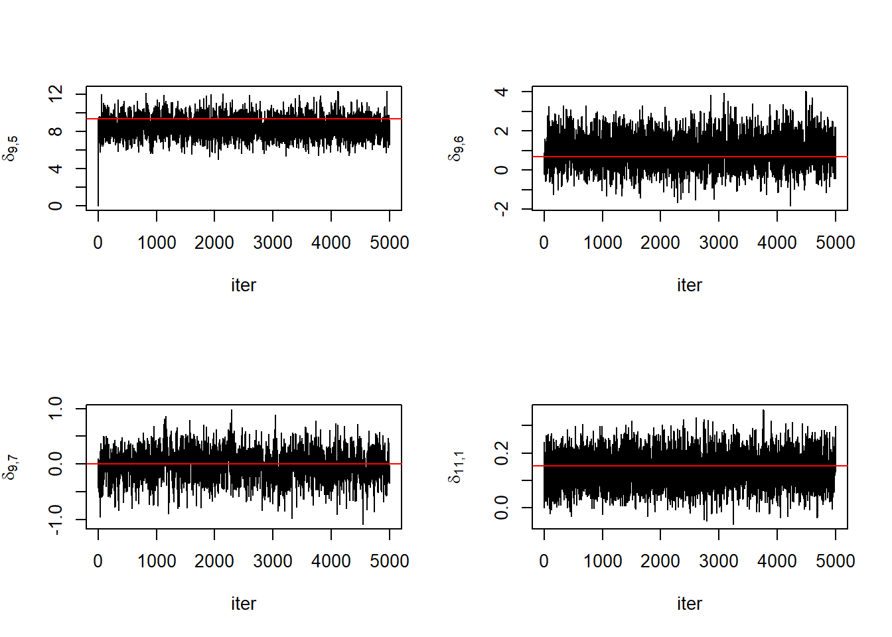

Code: Load the packages
library(tictoc)
library(Rfast)
library(numDeriv)library(tictoc)
library(Rfast)
library(numDeriv)Let \(Y_{ij}\) be an observation collected on day \(t_{ij}\) of year \(i\), \(i = 1, \dots, N\) and \(j = 1,\dots,n_i\). Assume \(Y_{ij}\) to be normally distributed with mean \(v(t_{ij}, \, \boldsymbol\theta_i)\) and constant variance \(\sigma^2\). The mean “double-logistic” function, \(v(t, \, \boldsymbol{\theta})\), is parameterized by \(\boldsymbol\theta\) and is defined \[\begin{equation} \tag{1} v(t, \, \boldsymbol\theta) = \theta_1 + (\theta_2 - \theta_7 t)\left(\frac{1}{\exp\left\{\frac{\theta_3 - t}{\theta_4}\right\}} - \frac{1}{\exp\left\{\frac{\theta_4 - t}{\theta_6}\right\}}\right) \end{equation}\]
There is an additional constraint that \(v(t, \, \boldsymbol{\theta}) \in [0,1]\) and \(\theta_7 \ge 0\). One option would be to put priors on \(\theta_1\) with \([0,1]\) support and \(\theta_7\) with \([0,\infty)\) support. One might also consider the constraint \(\theta_2 \in [\theta_1, 1]\), but we should be careful to specify a prior whose support depends on another parameter. Instead, we opt not to constrain or transform \(\theta_2\). In general, we would prefer to place a multivariate normal prior over the entire vector \(\boldsymbol\theta\). To that end, consider a reparameterazation of \(v(t,\boldsymbol\theta)\),
\[\begin{equation} \tag{2} v(t, \, \boldsymbol\theta) = \frac{1}{1+\exp\{\theta_1\}} + \left(\theta_2 - \exp\{\theta_7\} t\right)\left(\frac{1}{\exp\left\{\frac{\theta_3 - t}{\theta_4}\right\}} - \frac{1}{\exp\left\{\frac{\theta_4 - t}{\theta_6}\right\}}\right) \end{equation}\]
The function \(v(t, \, \boldsymbol{\theta})\) is a non-linear function of \(\boldsymbol\theta\) which consequently violates conjugacy of the typically assumed priors. To overcome this we will work with a linearized version of \(v(t, \, \boldsymbol{\theta})\). This significantly decreases the computational burden of MCMC at the cost of introducing statistical bias. Are the computational gains worth the induced bias?
The linearization of \(v(t, \, \boldsymbol\theta)\) around \(\boldsymbol\theta_0\) yields, \[\begin{equation} \tag{3} v(t, \, \boldsymbol\theta) \approx v(t, \, \boldsymbol\theta_0) + \nabla_{\boldsymbol\theta}v(t, \, \boldsymbol\theta)|_{\boldsymbol\theta=\boldsymbol\theta_0}(\boldsymbol\theta - \boldsymbol\theta_0) \end{equation}\]
Define the following,
\[\begin{equation} \tag{4} Y^*_{ij} = Y_{ij} - v(t_{ij}, \, \boldsymbol\theta_0) \end{equation}\]
\[\begin{equation} \tag{5} X(t) = \nabla_{\boldsymbol\theta}v(t, \, \boldsymbol\theta)|_{\boldsymbol\theta=\boldsymbol\theta_0} \end{equation}\]
\[\begin{equation} \tag{6} \boldsymbol\delta_i = \boldsymbol\theta_i-\boldsymbol\theta_0 \end{equation}\]
\[\begin{equation} \mathbf{Y}_i \sim \text{Normal}_{n_i}\left(v(\mathbf{t}_i, \boldsymbol{\theta}_i), \; \sigma^2 \mathbf{I}_{n_i}\right) \end{equation}\]
Construct the \(m \times p\) parent design matrix \(\mathbf{X}\) with rows \(X(t)\) for \(t=1,\dots,m\). Define the “child” design matrix, \(\widetilde{\mathbf{X}}_i\) to be the subset of rows from \(\mathbf{X}\) specified by \(\mathbf{t}_i\).
The \(N \times q\) covariate matrix \(\mathbf{Z}\) organizes known covariates for the mean of the distribution for \(\boldsymbol\delta_i\). Let \(\mathbf{z}_i\) be the \(i\)th row of \(\mathbf{Z}\) and \(\boldsymbol{\mathcal{Z}}_i = (\mathbf{z}^T_i\otimes \mathbf{I}_p)\) where “\(\otimes\)” represents the Kronecker product.
Now we can place a multivariate prior on \(\boldsymbol\delta_i\) as this parameter represents deviations from \(\boldsymbol\theta_0\). The linearized model is as follows,
\[\begin{align*} \mathbf{Y}^*_i &\sim \text{Normal}_{n_i}\left(\widetilde{\mathbf{X}}_i\boldsymbol\delta_i, \; \sigma^2 \mathbf{I}_{n_i}\right)\\ \boldsymbol\delta_i &\sim \text{Normal}_p\left(\boldsymbol{\mathcal{Z}}_i\boldsymbol\beta, \; \mathbf{\Omega}\right) \end{align*}\]
Again, we will assume \(\mathbf{\Omega}\) is diagonal and let \(\omega_{kk}\) be the \(k\)th diagonal element. Next we specify priors, \[\begin{align*} \boldsymbol\beta &\sim \text{Normal}_{qp}\left(\boldsymbol\mu, \; \mathbf{\Lambda}\right)\\ \omega_{kk} &\sim \text{InvGamma}\left(a_\omega, \; b_\omega \right)\\ \sigma^2 &\sim \text{InvGamma}\left(a_\sigma, \; b_\sigma\right) \end{align*}\]
Let \(\boldsymbol\Delta = [\boldsymbol\delta_1 \; \dots \; \boldsymbol\delta_N]\) and \(\mathbf{B} = [\boldsymbol\beta_1 \; \dots \; \boldsymbol\beta_q]\). That is, \(\mathbf{B}\) is a \(p \times q\) matrix and \(\text{vec}(\mathbf{B}) = \boldsymbol\beta\). The full conditionals in this model are as follows,
\[\begin{align*} \boldsymbol\delta_i|\text{rest} &\sim \text{Normal}_p(\mathbf{V}_i^{-1}\mathbf{M}_i, \mathbf{V}_i^{-1})\\ \mathbf{V}_i &= \frac{1}{\sigma^2} \widetilde{\mathbf{X}}_i^T\widetilde{\mathbf{X}}_i + \mathbf{\Omega}^{-1}\\ \mathbf{M}_i &= \frac{1}{\sigma^2} \widetilde{\mathbf{X}}_i^T\mathbf{Y}_i + \mathbf{\Omega}^{-1}\mathbf{B}\mathbf{z}_i\\\\ \boldsymbol\beta|\text{rest} &\sim \text{Normal}_{qp}(\mathbf{V}_\beta^{-1}\mathbf{M}_\beta, \mathbf{V}_\beta^{-1}\\ \mathbf{V}_\beta &= \mathbf{Z}^T\mathbf{Z} \otimes \boldsymbol\Omega^{-1} + \mathbf{\Lambda}^{-1}\\ \mathbf{M}_\beta &= (\mathbf{Z}^T \otimes \, \boldsymbol\Omega^{-1})\text{vec}(\boldsymbol\Delta) + \mathbf{\Lambda}^{-1}\boldsymbol\mu\\\\ \omega_{kk}|\text{rest} &\sim \text{InvGamma}(A_\omega,B_\omega)\\ A_\omega &= N/2 + a_\omega\\ B_\omega &= \frac{1}{2}\sum_{i=1}^N (\delta_{ik} - (\mathbf{B}\mathbf{z}_i)_k)^2 + b_\omega\\\\ \sigma^2|\text{rest} &\sim \text{InvGamma}(A_\sigma,B_\sigma)\\ A_\sigma &= \frac{1}{2}\sum_{i=1}^N n_i + a_\sigma\\ B_\sigma &= \frac{1}{2}\sum_{i=1}^N (\mathbf{Y}_i - \widetilde{\mathbf{X}}_i\boldsymbol\delta_i)^T(\mathbf{Y}_i - \widetilde{\mathbf{X}}_i\boldsymbol\delta_i) + b_\sigma \end{align*}\]
Next moving on the code implementation. Define the double logistic function and its gradient.
# expit #
# equivalent to plogis with m=0 & s=1.
expit <- function(x){1/(1+exp(-x))}
# expit_p #
# first derivative of the expit function. equivalent to dlogis with m=0 & s=1.
expit_p <- function(x){expit(x)*(1-expit(x))}
double_logis <- function(t, theta){
# double logistic function.
# theta1 is transformed using the logistic function.
# theta2 is transformed using the
# This allows for all parameters to follow a gaussian distribution
theta[1] <- plogis(theta[1])
theta[7] <- exp(theta[7])
n1 <- 1
d1 <- 1 + exp((theta[3] - t)/theta[4])
n2 <- 1
d2 <- 1 + exp((theta[5] - t)/theta[6])
out <- theta[1] + (theta[2] - theta[7]*t)*(n1/d1 - n2/d2)
return(out)
}
# double logistic gradient wrt theta
basis_functions <- function(t,theta){
t <- t%%366
dl0 <- double_logis(t,theta)-expit(theta[1])
a <- expit_p(theta[7])
theta[7] <- exp(theta[7])
B1 <- expit_p(theta[1])
B2 <- (1/(1+exp((theta[3]-t)/theta[4])))-(1/(1+exp((theta[5]-t)/theta[6])))
B3 <- (theta[7]*t - theta[2])/(2*theta[4]*cosh((theta[3]-t)/theta[4])+2*theta[4])
B4 <- ((theta[3] - t)*(theta[2]-theta[7]*t)*cosh((theta[3]-t)/(2*theta[4]))^(-2))/(4*theta[4]^2)
B5 <- (theta[2] - theta[7]*t)/(2*theta[6]*cosh((theta[5]-t)/theta[6])+2*theta[6])
B6 <- ((theta[5] - t)*(theta[7]*t-theta[2])*cosh((theta[5]-t)/(2*theta[6]))^(-2))/(4*theta[6]^2)
B7 <- -t*a*((1/(1+exp((theta[3]-t)/theta[4])))-(1/(1+exp((theta[5]-t)/theta[6]))))
B <- unname(cbind(B1, B2, B3, B4, B5, B6, B7))
return(B)
}We need to specify a value of \(\boldsymbol\theta_0\) on which to center the linearization. We will expand on how to obtain this value at a later time.
theta0 <- c(-1.80, 0.75, 120, 8, 270, 8, -7.5)
plot(1:366, double_logis(1:366, theta0), type = "l",
xlab = "t",
ylab = bquote(v(t,theta[0])))
We verify that the analytical gradient is correct by checking the result against a numerical gradient function.
theta0 <- c(-1.80, 0.75, 120, 8, 270, 8, -7.5)
gradinput <- function(x,t){
return(double_logis(t,x))
}
# compute numerical gradient
G <- matrix(0, nrow = 366, ncol = 7)
for (i in 1:366){
G[i,] <- grad(gradinput, x = theta0, t=i)
}
# # compute the analytical gradient
X <- basis_functions(1:366, theta0)
matplot(G, type="l", main = "Numerical Gradient", xlab = "t")
matplot(X, type="l", main = "Analytical Gradient", xlab = "t")
Next we simulate some data from the linearized model. (Need to add details regarding simulation set-up).
# dimensions
N <- 40
m <- 366
n <- rep(100,N)
p <- 7
q <- 2
theta0 <- c(-1.80, 0.75, 120, 8, 270, 8, -7.5)
# Design matrices
gradinput <- function(x,t){
return(double_logis(t,x))
}
# compute numerical gradient
Xp <- basis_functions(1:366, theta0)
Z <- matrix(c(rep(1,N), seq(1:N)), ncol = 2)
# beta parameters
B0 <- matrix(c(0, 0, -15, 0, 15, 0, 0,
0, 0, 1, 0, -1, 0, 0), nrow=p)
beta0 <- matrix(c(B0), ncol = 1)
Omega0 <- diag(c(0.025, 1e-3, 3, 1, 3, 1, 0.0005))
# delta parameters
delta0 <- matrix(0, nrow = p, ncol = N)
sigma20 <- 0.0025
# sample data
Y <- list()
X <- list()
t <- list()
for (i in 1:N){
# draw delta
delta0[,i] <- t(Rfast::rmvnorm(1, B0%*%Z[i,], Omega0))
# draw rows from parent X
t[[i]] <- sample(1:m, n[i])
X[[i]] <- Xp[t[[i]],]
# draw response
Y[[i]] <- matrix(rnorm(n[i], mean = X[[i]]%*%delta0[,i], sd = sqrt(sigma20)), ncol=1)
}Plot the simulated curves. We won’t plot the individual observations.
plot(1:366, double_logis(1:366, theta0), type = "l", ylim=c(-0.1, 1.2))
for (i in 1:N){
lines(1:366, double_logis(1:366, theta0) + Xp%*%delta0[,i], type="l", col = i,
xlab = "t",
ylab = "Y",
main = "Simulated Curves")
# points(t[[i]], Y[[i]] + double_logis(t[[i]], theta0), pch=16)
}
The Gibbs loop. Later we will re-write this as a function.
# set-up
niter <- 5000
keep_delta <- array(NA, dim = c(p, N, niter))
keep_B <- array(NA, dim = c(p, q, niter))
keep_Omega <- matrix(NA, nrow = niter, ncol = p)
keep_sigma2 <- rep(NA, niter)
# initial values
delta <- matrix(0, nrow = p, ncol = N)
beta <- rep(0, q*p)
B <- matrix(c(beta), nrow=p)
sigma2 <- 0.01
Omega <- diag(c(0.5, 0.5, 5, 0.5, 5, 0.5, 0.001))
keep_delta[,,1] <- delta
keep_B[,,1] <- B
keep_Omega[1,] <- diag(Omega)
keep_sigma2[1] <- sigma2
# prior parameters
mu <- rep(0, q*p)
Lambda_inv <- diag(rep(1e-06,q*p))
a <- 0.1
b <- 0.1
# pre-computes
XtX <- list()
XtY <- list()
for (k in 1:N){
XtX[[k]] <- t(X[[k]])%*%X[[k]]
XtY[[k]] <- t(X[[k]])%*%Y[[k]]
}
ZtZ <- t(Z)%*%Z
Lmu <- Lambda_inv%*%mu
Ao <- N/2 + a
As <- sum(n)/2 + a
# Gibbs Loop
tic()
for (iter in 2:niter){
Omega_inv <- diag(1/diag(Omega))
# sample deltas
for (i in 1:N){
M <- (1/sigma2)*XtY[[i]] + Omega_inv%*%(B%*%Z[i,])
V_inv <- chol2inv(chol((1/sigma2)*XtX[[i]] + Omega_inv))
delta[,i] <- V_inv%*%M+t(chol(V_inv))%*%rnorm(p)
}
# sample beta
M <- kronecker(t(Z), Omega_inv)%*%matrix(c(delta), ncol = 1) + Lmu
V_inv <- solve(kronecker(ZtZ, Omega_inv) + Lambda_inv)
beta <- V_inv%*%M+t(chol(V_inv))%*%rnorm(q*p)
B <- matrix(beta, nrow = p)
# sample omegas
for (k in 1:p){
Bo <- sum((delta[k,] - (B%*%t(Z))[k,])^2)/2 + b
Omega[k,k] <- 1/rgamma(1, Ao, Bo)
}
# sample sigma2
SSE <- 0
for (i in 1:N){
SSE <- SSE + sum((Y[[i]] - X[[i]]%*%delta[,i])^2)
}
Bs <- SSE/2 + b
sigma2 <- 1/rgamma(1, As, Bs)
# store everything
keep_delta[,,iter] <- delta
keep_B[,,iter] <- B
keep_Omega[iter,] <- diag(Omega)
keep_sigma2[iter] <- sigma2
}
toc()11.15 sec elapsedNow for some trace plots. The following are for \(\mathbf{B}\), \(\boldsymbol\Omega\), and \(\sigma^2\). And display iterations 100:5000. This visual inspection seems to indicate good convergence!
win <- 1:niter
par(mfrow = c(2,2))
for(l in 1:q){
for (k in 1:p){
plot(win, keep_B[k, l, win], type = "l",
ylab = bquote(beta[paste(.(l),",",.(k))]),
xlab = "iter")
abline(h = B0[k, l], col = "red")
}
}


for (k in 1:p){
plot(win, keep_Omega[win, k], type = "l",
ylab = bquote(omega[paste(.(k),",",.(k))]),
xlab = "iter")
abline(h = Omega0[k, k], col = "red")
}

plot(win, keep_sigma2[win], type = "l",
ylab = bquote(sigma^2),
xlab = "iter")
abline(h = sigma20, col = "red")
Trace plots for 5 subject \(\boldsymbol\delta_i\) chosen at random.
win <- 1:niter
par(mfrow = c(2,2))
param_sample <- sample(1:N, 5)
for (year in param_sample){
for (k in 1:p){
subscr <- paste0(year,",",k)
plot(win, keep_delta[k, year, win], type = "l",
ylab = bquote(delta[.(subscr)]),
xlab = "iter")
abline(h = delta0[k, year], col = "red")
}
}
